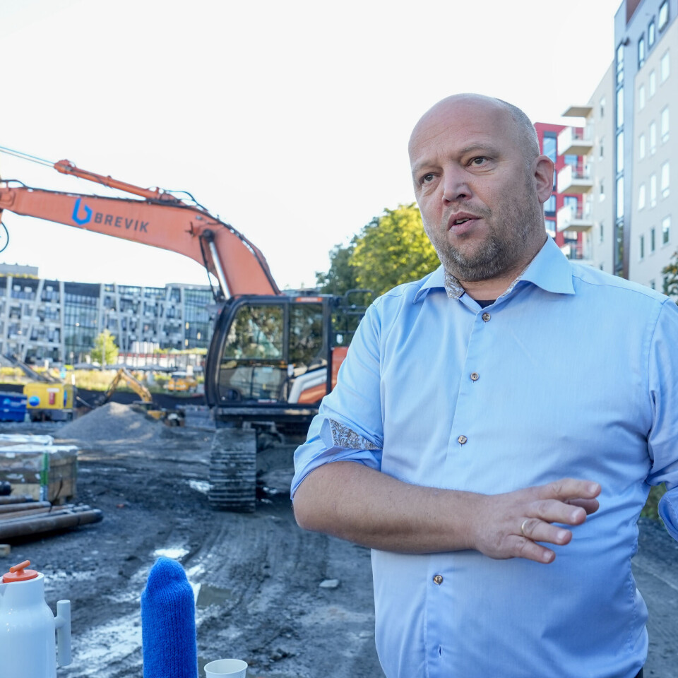

bygg
Om oss
bygg holder til i Oslo.
bygg holder til i Oslo og tar oppdrag innen premierte årets beste oppgaver, stillinger, fremdriftsplanlegger og produksjonsleder tunnelprosjekter.
Vi dekker alt fra arkitekter og rådgivere til entreprenører og byggherrer, og alt som påvirker byggenæringen.
Annonsørinnhold Fleksibel og effektiv passiv brannsikring fra VELUX Commercial Annonse Kontrakter PLUSS HENT skal bygge kontorbygg i Stavanger PLUSS Betonmast skal rehabilitere for Norwegian Property på Fornebu PLUSS Engelsen Total bygger nytt trinn på Austevoll-prosjekt PLUSS NCC starter byggingen av kultursenter på Stiklestad PLUSS Skal prosjektere nytt avfallsanlegg i Overhalla PLUSS Signerte rammeavtaler med fylkeskommuner PLUSS Veidekke fikk kontrakt på 745 millioner J.I.
Bygg har fått boligoppdrag for Bærum kommune PLUSS Rehabiliterer for 300 millioner i Bergen PLUSS Skanska signerte for helsesenter PLUSS Bygger nye lokaler for sveiseleverandør PLUSS Signerte stor NTNU Campus-kontrakt Annonse PLUSS PLUSS Krever svar fra Google etter 143 lovbrudd PLUSS PLUSS Han blir ny sjef i HRL Entreprenør Les nyeste utgave av Byggeindustrien her Siste nyheter Spanias samferdselsminister går av etter togtragedier NHO med sju forslag til datasenterregulering Han blir ny sjef i HRL Entreprenør Ap krever svar fra Google etter 143 lovbrudd Over 60 bedrifter viser seg frem – derfor er entreprenørene på NTNU Regjeringen vurderer om terskelen for innsigelse skal heves Full stans for flere store Ruta-prosjekter Entreprenør om kransaken: – Undersøker alle forhold Senterpartiet foreslår bygg- og anleggspakke på over 14 milliarder kroner Resultatfall for Multiconsult: – Ikke på nivå med våre langsiktige ambisjoner Innlegg: La oss gjøre noe med det vi faktisk kan gjøre noe med Undersøkelse: Nær ni av ti venter strengere dokumentasjonskrav Innlegg: Hvorfor venter vi til veiene blir ødelagt? PLUSS PLUSS Får tilbake 100 millioner etter B&G-konkursen PLUSS PLUSS Senterpartiet foreslår bygg- og anleggspakke på over 14 milliarder kroner Annonse Mest lest - bygg PLUSS Ruta begjærer oppbud – rekonstruksjon felt av skattekrav PLUSS Rambøll skal kutte 400 stillinger PLUSS Må ut med flere millioner etter gravejobb: – Sterkt uenige PLUSS Oslos nye tårn reiser seg PLUSS 29 konkurser i uke 44 PLUSS Kreditor om Ruta-forslag: – Latterlig Nye Veiers nye veier PLUSS Dette må til for Ruta-rekonstruksjon Mest lest - anlegg Entreprenør etterlyser betalinger – varsler mulig byggestans i Sotrasambandet PLUSS Varsler søksmål – krever erstatning etter å ha tapt kontrakt verdt 500 millioner PLUSS Nye Veier åpner motorveier for 14 milliarder PLUSS NRC kutter norsk sjef etter litt over fire måneder – skylder på markedet PLUSS Mesta legger ned betongavdeling: 40 ansatte berørt PLUSS Støper 110.000 kubikkmeter betong på Sotrasambandet PLUSS Dødsulykke: Ble klemt da førerhuset på gravemaskinen plutselig raste bakover PLUSS Lyser ut hovedkontrakt for rassikring i milliardprosjekt Byggeprosjekt: Nytorget 1 Byggeprosjekt: Hammersborg Torg Personalnytt PLUSS Hun blir ny salgs- og markedssjef i H-fasader PLUSS Ny sjef i RISE Fire Research PLUSS Får lederrolle i Byggtjeneste PLUSS Ny investeringsdirektør på plass i Skanska Bolig PLUSS Blir ny norsk Norconsult-sjef PLUSS Hederspris til byggevarepionér i Coop Han blir ny direktør for kategori og konsept i Maxbo PLUSS Hun blir eiendomssjef i Aspelin Reitan PLUSS Blir ny sjef i dør- og låsselskap PLUSS Ny direktør for Multiconsult i Midt-Norge Annonse REGJERINGEN SVARER PÅ BRANSJENS INNSPILL - SLIK VIL DE BYGGE MER PLUSS PLUSS Vurderer om terskelen for innsigelse skal heves NHO med sju forslag til datasenterregulering Nytt fra Anlegg.no PLUSS Fersk aktør sikret E6-kontrakt til 30 millioner PLUSS Tre bruer i ett prosjekt: Skal bygge en 925 meter lang betongkassebru PLUSS Asplan Viak tapte millionklage mot avløpsselskap PLUSS Premierte årets beste oppgaver PLUSS Nye Veier tester automatisk salting på E6 PLUSS Investerer 250 millioner i pilotanlegg på Fensfeltet PLUSS Ti selskaper slåss om Valdres-kontrakt PLUSS Oslo strammer ytterligere inn på klimakravene i anleggsprosjekter PLUSS Får tilbake 100 millioner etter B&G-konkursen PLUSS Oslo kommune skal bruke 1,2 milliarder på anleggsinvesteringer i 2027 Annonsørinnhold Derfor bør takløsningen vurderes tidlig Annonsørinnhold I Bodø får takene virkelig kjørt seg.
«Følg bygget fra første spadetak»

Vil du vite mer?
Vi svarer på det du lurer på, uten bindende avtale.
Ta kontakt